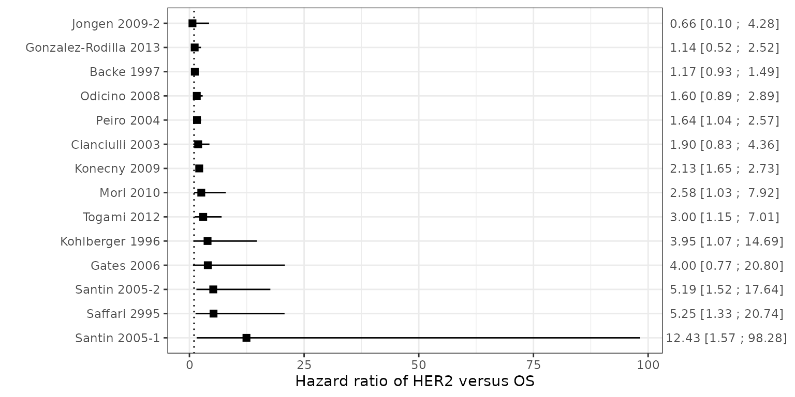
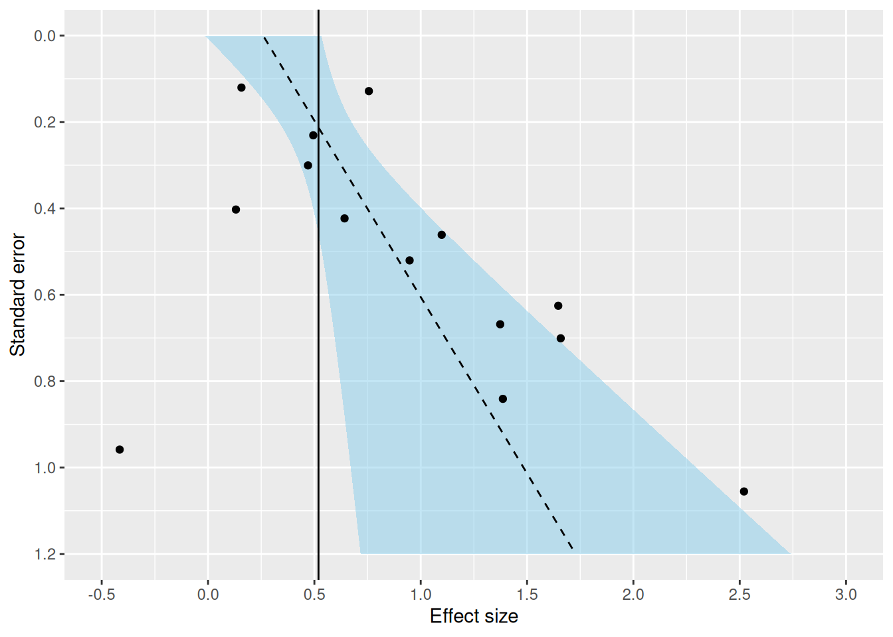

Introduction
An important task in medical research is the identification and assessment of prognostic factors. A prognostic factor is any measure that, among people with a given health condition (that is, a startpoint), is associated with a subsequent clinical outcome (an endpoint) (Riley 2013). Commonly investigated prognostic factors include simple measures such as age, sex, and size of tumor, but they can also include more complex factors such as abnormal levels of proteins or catecholamines and unusual genetic mutations (Sauerbrei and Altman 2006). They can be useful as modifiable targets for interventions to improve outcomes, building blocks for prognostic models, or predictors of differential treatment response.
Over the past few decades, numerous prognostic factor studies have been published in the medical literature. For example, Riley and Burchill (2003) identified 260 studies reporting associations for 130 different tumour markers for neuroblastoma. More recently, Tzoulaki and Ioannidis (2009) identified 79 studies reporting the added value of 86 different markers when added to the Framingham risk score. Despite this huge research effort, the prognostic value of most traditional factors under discussion is uncertain and the usefulness of many specific markers, prognostic indices, and classification schemes is still unproven (Sauerbrei and Altman 2006).
This vignette aims to illustrate how the results from multiple prognostic factor studies can be summarized and how sources of between-study heterogeneity can be examined. Hereto, we will use the R packages metamisc and metafor. The https://cran.r-project.org/package=metafor package provides a comprehensive collection of functions for conducting meta-analyses in R. The https://cran.r-project.org/package=metamisc package provides additional functions to facilitate meta-analysis of prognosis studies. We can load these packages as follows:
Case Study
Endometrial cancer (EC) is the fourth most common malignancy in women and the most common gynecologic cancer. Overall, the 5-year survival rates for EC are approximately 78–90% for stage I, 74% for stage II, 36–57% for stage III, and 20% for stage IV. Such poor outcomes raise an urgent requirement that more accurate prognosis and predictive markers should be applied for EC to guide the therapy and monitor the disease progress for individual patients.
Several biological molecules have been proposed as prognostic biomarkers in EC. Among them, hormone receptors such as estrogen receptors (ER), progesterone receptors (PR), and human epidermal growth factor receptor 2 (HER2) are attractive because of their physiological functions. Recently, Zhang conducted a systematic review to evaluate the overall risk of these hormone receptors for endometrial cancer survival (Zhang and Sun 2015). This review included 16 studies recruiting 1764 patients for HER2. For each study, estimates of effect were retrieved as follows. The simplest method consisted in the direct collection of HR, odds ratio or risk ratio, and their 95% CI from the original article, with an HR of less than 1 being associated with a better outcome. If not available, the total numbers of observed deaths/cancer recurrences and the numbers of patients in each group were extracted to calculate HR. When data were only available as Kaplan-Meier curves, data were extracted from the graphical survival plots, and estimation of the HR was then performed using the described method.
We can load the data from all 16 studies in R as follows:
data(Zhang)This creates an object Zhang that contains the summary
data from 14 studies reporting on overall survival (OS) and from 6
studies reporting on progression-free survival (PFS). A total of 14
studies assessed the relation between HER2 and overall survival. The
corresponding hazard ratios (HR) are given below:
| Study | Country | Disease | N | Hazard Ratio (95% CI) |
|---|---|---|---|---|
| Gonzalez-Rodilla, 2013 | Spain | EC | 126 | 1.14 (0.52; 2.52) |
| Togami, 2012 | Japan | UPSC | 71 | 3 (1.15; 7.01) |
| Mori, 2010 | Japan | EEC | 63 | 2.58 (1.03; 7.92) |
| Jongen, 2009 | Netherlands | EEC | 315 | 0.66 (0.1; 4.28) |
| Konecny, 2009 | USA | EC | 273 | 2.13 (1.65; 2.73) |
| Odicino, 2008 | Italy | UPSC | 10 | 1.6 (0.89; 2.89) |
| Santin, 2005 | USA | UPSC | 30 | 5.19 (1.52; 17.64) |
| Santin, 2005 | USA | UPSC | 27 | 12.43 (1.57; 98.28) |
| Backe, 1997 | Germany | EC | 222 | 1.17 (0.93; 1.49) |
| Kohlberger, 1996 | Australia | EC | 100 | 3.95 (1.07; 14.69) |
| Saffari, 1995 | USA | EC | 75 | 5.25 (1.33; 20.74) |
| Peiro, 2004 | Germany | EC | 10 | 1.64 (1.04; 2.57) |
| Cianciulli, 2003 | Italy | EC | 73 | 1.9 (0.83; 4.36) |
| Gates, 2006 | USA | EC | 99 | 4 (0.77; 20.8) |
Results suggest that the hormone receptor HER2 has prognostic value for survival but is prone to substantial between-study heterogeneity. For example, hazard ratios appear much larger for studies that were conducted in the USA. Possibly, the variation in treatment effect estimates is caused by differences in the baseline characteristics of patients (age, tumor stage, race), differences in the cutoff value of HER2, differences in received treatments, or differences in the duration of follow-up. Importantly, because estimated hazard ratios have not been adjusted for any patient-level covariates, they are particularly prone to heterogeneity in patient spectrum.
First steps
To facilitate any quantitative analysis, information on the standard error of the different study effect sizes is needed. Estimates for the standard error can be obtained from the reported 95% confidence intervals (Altman Douglas G. and Bland 2011). It is then commonly assumed that the log hazard ratio follows a Normal distribution, such that he standard error (SE) of the log hazard ratio is given as:
\(\mathrm{SE}=(\log(u)-\log(l))/(2*1.96)\)
where the upper and lower limits of the 95% CI are \(u\) and \(l\) respectively. We can implement this calculation as follows:
It is often helpful to display the effect sizes of all studies in a
forest plot. An advantage of the forest plot is that allows a visual
inspection of the available evidence and facilitates the identification
of potential between-study heterogeneity. The forest plot for overall
survival can then be generated using the forest function in
metamisc. This requires to provide information on the
estimated hazard ratios (via the argument theta), as well
as the bounds of their 95% confidence interval (via
theta.ci.lb and theta.ci.ub).
library(dplyr)
# Select the 14 studies investigating overall survival
dat_os <- Zhang %>% filter(outcome == "OS")
# Generate a forest plot of the log hazard ratio
metamisc::forest(theta = dat_os$HR,
theta.ci.lb = dat_os$HR.025,
theta.ci.ub = dat_os$HR.975,
theta.slab = dat_os$Study,
xlab = "Hazard ratio of HER2 versus OS",
refline = 1)
We can also generate a forest plot using metafor:
metafor::forest(x = dat_os$HR,
ci.lb = dat_os$HR.025,
ci.ub = dat_os$HR.975,
slab = dat_os$Study,
xlab = "Hazard ratio of HER2 versus OS",
refline = 1)
Assessment of publication bias
The presence of small-study effects is a common threat to systematic reviews and meta-analyses. Small-study effects is a generic term for the phenomenon that sometimes smaller studies show different, often stronger, effects than the large ones (Debray and Riley 2018). One possible reason is publication bias. Previously, D. G. Altman (2001) argued that it is probable that studies showing a strong (often statistically significant) prognostic ability are more likely to be published. For this reason, it is important to evaluate the potential presence of small-study effects, which can be verified by visual inspection of the funnel plot. In this plot, the estimate of the reported effect size is plotted against a measure of precision or sample size for each included study of the meta-analysis. The premise is that the scatter of plots should reflect a funnel shape, if small-study effects do not exist (provided that effect sizes are not substantially affected by the presence of between-study heterogeneity). However, when small studies are predominately in one direction (usually the direction of larger effect sizes), asymmetry will ensue.
A common approach to construct the funnel plot is to display the individual observed effect sizes on the x-axis against the corresponding standard errors on the y-axis, and to use the fixed effect summary estimate as reference value. In the absence of publication bias and heterogeneity, one would then expect to see the points forming a funnel shape, with the majority of the points falling inside of the pseudo-confidence region of the summary estimate.
res <- rma(yi = logHR, sei = se.logHR, method = "FE", data = dat_os)
funnel(res, xlab = "Log Hazard Ratio")In the case study, most study estimates fall within the pseudo-confidence region, hence there appears limited evidence for publication bias.
We can formally test the presence of asymmetry in the funnel plot by evaluating whether there is an association between the estimated standard error and the estimated effect size.
regtest(x = dat_os$logHR,
sei = dat_os$se.logHR,
model = "lm",
predictor = "sei")##
## Regression Test for Funnel Plot Asymmetry
##
## Model: weighted regression with multiplicative dispersion
## Predictor: standard error
##
## Test for Funnel Plot Asymmetry: t = 2.1622, df = 12, p = 0.0515
## Limit Estimate (as sei -> 0): b = 0.2590 (CI: -0.0760, 0.5939)It is common to use a 10% level of significance because the number of studies in a meta-analysis is usually low. In the case study, the P-value is 0.052, which implies there is evidence for funnel plot asymmetry .
Funnel plot asymmetry tests can also be performed using metamisc as follows:
regfit <- fat(b = dat_os$logHR,
b.se = dat_os$se.logHR,
method = "E-FIV")which yields
## Call: fat(b = dat_os$logHR, b.se = dat_os$se.logHR, method = "E-FIV")
##
## Fixed effect summary estimate: 0.5193
##
## test for funnel plot asymmetry: t =2.1622, df = 12, p = 0.0515Again, we can construct a funnel plot:
plot(regfit)
Some caution is warranted when interpreting the results for funnel plot asymmetry tests (Debray and Riley 2018). First, the power to detect asymmetry is often limited because meta-analyses usually do not include many studies. Second, many tests are known to yield inadequate type-I error rates or to suffer from low power. For instance, it has been demonstrated that aforementioned test to evaluate the association between the estimated standard error and effect size tends to yield type-I error rates that are too high. Finally, funnel plot asymmetry may rather be caused by heterogeneity than by publication bias. We therefore adjust aforementioned regression test to use inverse of the total sample size (rather than the standard error) as predictor.
regtest(x = dat_os$logHR,
sei = dat_os$se.logHR,
ni = dat_os$N,
model = "lm",
predictor = "ninv")##
## Regression Test for Funnel Plot Asymmetry
##
## Model: weighted regression with multiplicative dispersion
## Predictor: inverse of the sample size
##
## Test for Funnel Plot Asymmetry: t = 0.1552, df = 12, p = 0.8793
## Limit Estimate (as ni -> inf): b = 0.5088 (CI: 0.2226, 0.7950)From here onwards, we will assume that the potential for publication bias is negligible, and proceed with standard meta-analysis methods.
Meta-analysis of the prognostic value of HER2
Meta-analysis is an option when the identified studies are considered sufficiently robust and comparable, and requires there are at least two estimates of the same statistic across studies. A random effects approach is often essential to allow for unexplained heterogeneity across studies due to differences in their methods, time-scale, populations, cut-points, adjustment factors, and treatments.
A standard random effects meta-analysis combines the study estimates of the statistic of interest (here given as the log HR of HER2) in order to estimate the average effect (denoted by \(\mu\)) and its standard deviation (denoted by \(\tau\)) across studies. If \(\hat b_i\) and \(\mathrm{var}(\hat b_i)\) denote the estimate and its variance in study \(i\), then a general random effects meta-analysis model can be specified as:
\(\hat b_i \sim N(\mu, \mathrm{var}(\hat b_i) + \tau^2)\)
It is common to first estimate the heterogeneity parameter \(\tau\) and to use the resulting value to
estimate \(\mu\). However, such
approach does not adequately reflect the error associated with parameter
estimation, especially when the number of studies is small. For this
reason, alternative estimators have been proposed that simultaneously
estimate \(\mu\) and \(\tau\). Here, we will focus on Restricted
Maximum Likelihood Estimation (REML), which is implemented as default in
metafor.
resREML <- rma(yi = logHR, sei = se.logHR, method = "REML",
slab = Study, data = dat_os)
resREML##
## Random-Effects Model (k = 14; tau^2 estimator: REML)
##
## tau^2 (estimated amount of total heterogeneity): 0.0883 (SE = 0.0854)
## tau (square root of estimated tau^2 value): 0.2972
## I^2 (total heterogeneity / total variability): 49.17%
## H^2 (total variability / sampling variability): 1.97
##
## Test for Heterogeneity:
## Q(df = 13) = 28.9214, p-val = 0.0067
##
## Model Results:
##
## estimate se zval pval ci.lb ci.ub
## 0.6669 0.1354 4.9251 <.0001 0.4015 0.9324 ***
##
## ---
## Signif. codes: 0 '***' 0.001 '**' 0.01 '*' 0.05 '.' 0.1 ' ' 1The pooled estimate for the log hazard ratio is 0.667 with a standard error of 0.135. The between-study standard deviation of the log hazard ratio is 0.297. We can extract the key statistics as follows:
# Summary estimate of the log hazard ratio for HER2
mu <- resREML$b
# 95% confidence interval of the pooled log hazard ratio
mu.ci <- c(resREML$ci.lb, resREML$ci.ub)
# Between-study variance of the log hazard ratio
tau2 <- resREML$tau2
# Error variance of the pooled log hazard ratio
sigma2 <- as.numeric(vcov(resREML))
# Number of studies contributing to the meta-analyis
numstudies <- resREML$k.allWe can use the information above to derive the summary estimate for the hazard ratio and its corresponding 95% confidence interval:
exp(mu)## [,1]
## intrcpt 1.948268
exp(mu.ci)## [1] 1.494104 2.540483The summary HR of HER2 is statistically significant, indicating that
increased levels of HER2 are associated with poorer survival. We can
also obtain the summary estimate and 95% CI for the HR of HER2 by simply
using the predict function:
predict(resREML, transf = exp)##
## pred ci.lb ci.ub pi.lb pi.ub
## 1.9483 1.4941 2.5405 1.0272 3.6954Although the summary result (\(\hat \mu\)) is usually the main focus of a meta-analysis, this reflects some average across studies and it may be hard to translate to clinical practice when there is large between-study heterogeneity. We can quantify the impact of between-study heterogeneity by constructing a \(100(1-\alpha/2)\)% prediction interval, which gives the potential true prognostic effect in a new population conditional on the meta-analysis results (Riley and Deeks 2011). An approximate prediction interval (PI) is given as follows:
\(\hat \mu \pm t_{\alpha, N-2} \sqrt{\hat \tau^2 + \hat \sigma^2}\)
where \(t_{\alpha, N-2}\) is the
\(100(1-\alpha/2)\)% percentile of the
t-distribution for \(N-2\) degrees of
freedom, \(N\) is the number of
studies, \(\hat \sigma\) is the
estimated standard error of \(\hat
\mu\), and \(\hat \tau\) is the
estimated between-study standard deviation. In R, can
calculate the approximate 95% PI for \(\hat
\mu\) as follows:
level <- 0.05
crit <- qt(c(level/2, 1-(level/2)), df = (numstudies - 2))
pi_lower <- exp(mu + crit[1] * sqrt(tau2 + sigma2))
pi_upper <- exp(mu + crit[2] * sqrt(tau2 + sigma2))
c(pi_lower, pi_upper)## [1] 0.9563084 3.9691662The 95% prediction interval ranges from 0.956 to 3.969, and suggests there is substantial heterogeneity in the prognostic value of HER2. In particular, although increased levels of HER2 are generally associated with poorer survival, they may also lead to improved survival (HR < 1) in certain settings. We can add the summary estimate and prediction interval to the forest plot:
# Generate a forest plot of the log hazard ratio
metamisc::forest(theta = dat_os$HR,
theta.ci.lb = dat_os$HR.025,
theta.ci.ub = dat_os$HR.975,
theta.slab = dat_os$Study,
theta.summary = exp(mu),
theta.summary.ci.lb = exp(mu.ci[1]),
theta.summary.ci.ub = exp(mu.ci[2]),
theta.summary.pi.lb = pi_lower,
theta.summary.pi.ub = pi_upper,
xlab = "Hazard ratio of HER2 versus OS",
refline = 1)
A possible approach to enhance the interpretation of meta-analysis results is to calculate the probability that the prognostic effect of HER2 will be above some useful value (e.g. a HR > 1.5 for a binary factor, which indicates risk is increased by at least 50%) in a new setting. We can calculate this probability as follows:
\(Pr(\mathrm{HR} > 1.5) = Pr(\hat \mu > \log(1.5)) = 1 - Pr(\hat \mu \leq \log(1.5))\)
where \(Pr(\hat \mu \leq \log(1.5))\) is approximated using a scaled Student-\(t\) distribution (similar to the calculation of our prediction interval):
## [,1]
## intrcpt 0.7805314The probability that HER2 will yield a hazard ratio for overall survival of at least 1.5 in a new setting is 78%. This means that despite the presence of between-study heterogeneity, it is likely that HER2 will provide substantial discriminative ability when used as a single prognostic factor in a new setting. We can also estimate this probability by means of simulation:
# Simulate 100000 new studies
Nsim <- 1000000
# Random draws from a Student T distribution
rnd_t <- rt(Nsim, df = (numstudies - 2))
# Generate 1,000,000 hazard ratios
HRsim <- exp(c(mu) + rnd_t*sqrt(tau2 + sigma2))
# Calculate the proportion of hazard ratios greater than 1.5
mean(HRsim > 1.5)## [1] 0.780385Again, the probability that HER2 will yield a hazard ratio for overall survival of >1.5 in a new setting is 78%.
Multivariate meta-analysis
In previous section, we used 14 of the 16 identified studies to evaluate the prognostic effect of HER2 on overall survival. Two studies were excluded from the meta-analysis because they did not provide direct evidence about overall survival. This is unwelcome, especially if the participants are otherwise representative of the population, clinical settings, and condition of interest (Riley and White 2017). For this reason, we here discuss how multivariate meta-analysis methods can be used to borrow strength from studies that do not investigate the primary outcome of interest. Briefly, multivariate meta-analysis methods simultaneously summarize the effect size across multiple outcomes whilst accounting for their correlation. For example, six studies in the review of Zhang and Sun (2015) assessed the hazard ratio of HER2 for progression-free survival, four of which also assessed overall survival. Hence, by conducting a multivariate meta-analysis we can borrow strength from two additional studies when estimating the hazard ratio for overall survival. The hazard ratios for progression free survival are depicted below:
| Study | Country | Disease | N | Hazard Ratio (95% CI) |
|---|---|---|---|---|
| Togami, 2012 | Japan | UPSC | 71 | 3.43 (1.5; 7.23) |
| Mori, 2010 | Japan | EEC | 63 | 3.8 (1.29; 12.35) |
| Jongen, 2009 | Netherlands | EEC | 315 | 1.75 (0.23; 13.08) |
| Coronado, 2001 | Spain | EC | 114 | 2.69 (1.35; 5.37) |
| Backe, 1997 | Germany | EC | 222 | 1.36 (0.65; 2.85) |
| Vos, 2011 | England | EC | 156 | 1.41 (0.51; 3.88) |
We first conduct a univariate meta-analysis of the six studies investigating progression-free survival:
dat_pfs <- Zhang %>% filter(outcome == "PFS")
resPFS <- rma(yi = logHR,
sei = se.logHR,
method = "REML",
slab = Study,
data = dat_pfs)Results indicate that the hormone receptor HER2 also has prognostic value for progression-free survival. Furthermore, the reported HRs appear to be much more homogeneous across studies, since the between-study standard deviation is 0.17 for progression-free survival whereas it was 0.30 for overall survival. Note that the univariate meta-analysis for progression-free survival is based on merely 6 studies, and that the univariate meta-analysis for overall survival was based on 14 studies. We can now employ multivariate meta-analysis to borrow information from the 4 studies that report prognostic effects for both endpoints. This, in turn, allows all studies to contribute on the summary effect for HER2 in both outcomes.
We first need to define the within-study covariance matrix of the estimated log hazard ratios for progression-free survival and overall survival. We here assume that estimates for the hazard ratio are independent within studies and construct a block diagonal matrix that only considers the error variance of each estimate:
V <- diag(Zhang$se.logHR**2)A multivariate random-effects model can now be used to simultaneously meta-analyze the hazard ratios for overall and progression-free survival:
res.MV <- rma.mv(yi = logHR,
V = V,
mods = ~ outcome - 1,
random = ~ outcome | Study,
struct = "UN",
data = Zhang,
method = "REML")
res.MV##
## Multivariate Meta-Analysis Model (k = 20; method: REML)
##
## Variance Components:
##
## outer factor: Study (nlvls = 16)
## inner factor: outcome (nlvls = 2)
##
## estim sqrt k.lvl fixed level
## tau^2.1 0.0865 0.2942 14 no OS
## tau^2.2 0.0770 0.2775 6 no PFS
##
## rho.OS rho.PFS OS PFS
## OS 1 - 4
## PFS 1.0000 1 no -
##
## Test for Residual Heterogeneity:
## QE(df = 18) = 33.7664, p-val = 0.0135
##
## Test of Moderators (coefficients 1:2):
## QM(df = 2) = 35.6315, p-val < .0001
##
## Model Results:
##
## estimate se zval pval ci.lb ci.ub
## outcomeOS 0.6704 0.1318 5.0868 <.0001 0.4121 0.9287 ***
## outcomePFS 0.8734 0.2151 4.0606 <.0001 0.4518 1.2950 ***
##
## ---
## Signif. codes: 0 '***' 0.001 '**' 0.01 '*' 0.05 '.' 0.1 ' ' 1The summary estimate of the log hazard ratio for overall survival is 0.670 (multivariate meta-analysis) versus 0.667 (univariate meta-analysis) with an SE of 0.132 and, respectively, 0.135. Hence, we gained some precision by including evidence from 2 additional studies that only evaluated progression-free survival.
| Outcome | Model | \(\mu\) | SE(\(\mu\)) | \(\tau\) | HR | 95% CI |
|---|---|---|---|---|---|---|
| Overall Survival | Univariate meta-analysis | 0.667 | 0.135 | 0.297 | 1.95 | 1.49; 2.54 |
| Overall Survival | Multivariate meta-analysis | 0.670 | 0.132 | 0.294 | 1.95 | 1.51; 2.53 |
| Progression-free Survival | Univariate meta-analysis | 0.815 | 0.201 | 0.168 | 2.26 | 1.52; 3.35 |
| Progression-free Survival | Multivariate meta-analysis | 0.873 | 0.215 | 0.277 | 2.40 | 1.57; 3.65 |
Note that estimation of between-study heterogeneity was difficult for progression-free survival due to the limited number of studies. In particular, we found \(\tau^2\)= 0.028 with an SE of 0.145. In the multivariate meta-analysis, the estimated between-study variance for PFS was much larger (\(\tau^2\)=0.077), and based on all 16 rather than merely 6 studies.
In summary, the multivariate meta-analysis approach is often helpful as it reduces the need to exclude relevant studies from a meta-analysis, thereby decreasing the risk of bias (e.g. due to selective outcome reporting) and potentially improving precision. As indicated by Riley and White (2017), a multivariate meta-analysis of multiple outcomes is most beneficial when the outcomes are highly correlated and the percentage of studies with missing outcomes is large.